출발
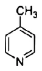
γ-Picoline1
27장 항결핵균 2종 + 28장 항바이러스제 4종 + 29장 항암제 7종. KEY 27-1 Fischer esterification · 27-2 Kolbe–Schmitt · 27-3 Sandmeyer · 28-1 Oxidative decarboxylation · 28-2 Mitsunobu · 28-3 Diels–Alder · 28-4 HWE가 나와요. 가릴 항목을 고르고, 가려진 칸을 눌러 답을 확인하세요. 다시 누르면 또 가려집니다. 구조 그림은 모두 교재 스킴에서 가져왔어요.
피리딘 4번 자리의 메틸을 끝까지 산화해 COOH로 만들고, Fischer esterification (KEY 27-1)으로 에스터로 바꾼 뒤 하이드라진을 걸면 끝. 에스터를 한 번 거치는 이유가 전부다 — COOH는 이탈기가 안 되기 때문. 법2는 니트릴을 아마이드까지만 가수분해한 뒤 하이드라진으로 치환한다.
| 단계 | 핵심반응 | 무엇이 바뀌나 |
|---|---|---|
| 법1-1 | 산화 (KMnO₄/Se, SeO₂) | Ar–CH₃ → Ar–COOH |
| 법1-2 | Fischer esterification (KEY 27-1) | COOH → COOEt |
| 법1-3 | 하이드라지놀리시스 | COOEt → CONHNH₂ |
| 법2-1 | 염기 가수분해 | C≡N → CONH₂ |
| 법2-2 | 아마이드 치환 | CONH₂ → CONHNH₂ |

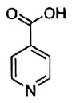
벤질 위치 산화 · H₂SO₄ 속에서 Se가 SeO₂로 바뀌고(Se + 2H₂SO₄ → SeO₂ + 2SO₂ + 2H₂O), SeO₂가 메틸의 C–H를 뽑아 알코올 → 알데하이드로 올린다. 이어 MnO₄⁻가 수화된 gem-diol을 산화해 carboxylic acid까지 끌어올린다. 피리딘 고리 자체는 전자가 부족해 산화에 버틴다.
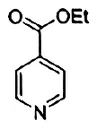
Fischer 에스터화 (KEY 27-1) · 산이 카보닐 산소를 양성자화해 친전자성을 키우고, EtOH가 부가해 사면체 중간체를 만든다. 양성자가 OH로 옮겨가 물을 좋은 이탈기로 바꾼 뒤 빠진다. 전 과정이 가역이라 알코올을 용매로 과량 써서 평형을 에스터 쪽으로 민다.
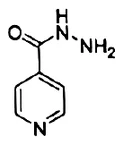
하이드라지놀리시스 · 하이드라진의 질소가 에스터 카보닐을 공격하고 EtO⁻가 빠진다. 하이드라진은 α-효과 때문에 같은 염기도의 아민보다 친핵성이 훨씬 크다.
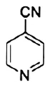
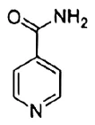
니트릴 부분 가수분해 · OH⁻가 니트릴 탄소에 부가해 이미데이트를 거쳐 1차 아마이드가 된다. 조건을 세게 하면 COOH까지 가므로 아마이드에서 멈추는 것이 포인트.
아마이드 치환 · 하이드라진이 아마이드 카보닐을 공격하고 NH₃가 빠진다. 결과는 법 1과 같다.
pyrazine 고리를 직접 만들지 않고 quinoxaline을 먼저 만든 뒤 벤젠 쪽만 KMnO₄로 산화 절단해 떼어내는 것이 핵심. 남은 dicarboxylic acid를 가열 탈탄산 → Fischer 에스터화 → 암모니아 아미노리시스. COOH 두 개 중 하나만 남기는 과정이다.
| 단계 | 핵심반응 | 무엇이 바뀌나 |
|---|---|---|
| 1 | 축합 고리화 | o-다이아민 + glyoxal → quinoxaline |
| 2 | 산화성 절단 (KMnO₄) | 벤젠 고리 → COOH 2개 |
| 3 | 열 탈탄산 | dicarboxylic acid → monocarboxylic acid |
| 4 | Fischer esterification (KEY 27-1) | COOH → COOMe |
| 5 | 아미노리시스 | COOMe → CONH₂ |
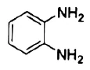
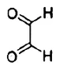
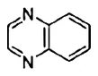
이중 축합 · 두 아민이 glyoxal의 두 알데하이드에 각각 부가-탈수해 C=N 두 개를 만들고, 방향족화되며 pyrazine 고리가 벤젠에 융합된 quinoxaline이 된다. 아민 두 개·알데하이드 두 개가 1:1로 맞물린다.
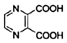
산화성 절단 · 두 고리 중 전자가 풍부한 벤젠 쪽만 MnO₄⁻에 깨진다. 질소 두 개가 전자를 당겨 pyrazine 고리는 전자가 부족해 산화에 버티므로, 벤젠이 뜯기며 자리마다 COOH가 남는다. 어느 고리가 깨지는지 묻는 문제가 나온다.
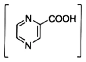
열 탈탄산 · 고리 질소에 인접한(α) COOH가 먼저 떨어진다. 탈탄산으로 생긴 카바니온을 고리 질소가 안정화하기 때문. CO₂가 빠지며 COOH 하나만 남는다.
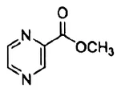
Fischer 에스터화 (KEY 27-1) · HCl 기체로 포화시킨 메탄올에서 산 촉매 에스터화. 여기서도 COOH의 OH를 이탈기로 못 쓰니 에스터로 바꿔 두는 것이다.
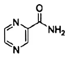
아미노리시스 · 암모니아가 에스터 카보닐을 공격하고 MeO⁻가 빠져 1차 아마이드가 된다. 무수 조건이라야 에스터가 가수분해로 새지 않는다.
당 대신 acyclic ether 사슬이 붙은 guanine. 법1은 purine을 먼저 알킬화하고 두 Cl을 차례로 바꾼다 — SNAr → 다이아조화 → 다시 SNAr. 법2는 guanine을 아세틸로 가려 용해도와 선택성을 확보한 뒤 옥소늄 중간체와 N9에서 붙인다.
| 단계 | 핵심반응 | 무엇이 바뀌나 |
|---|---|---|
| 법1-1 | N-알킬화 (SN2) | purine N9 + 클로로메틸 에테르 |
| 법1-2 | SNAr + 벤조일 제거 | C6–Cl → C6–NH₂, OBz → OH |
| 법1-3 | 다이아조화 → 가수분해 | C6–NH₂ → C6–OH (hypoxanthine형) |
| 법1-4 | SNAr | C2–Cl → C2–NH₂ |
| 법2-1 | 아세틸 보호 | guanine → N,N-diacetylguanine |
| 법2-2 | 산 촉매 알킬화 | 옥소늄 중간체 + N9 |
| 법2-3 | 아미노리시스 | 아세틸 전부 제거 |
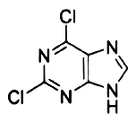
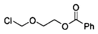
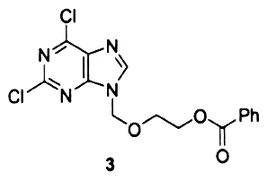
N-알킬화 · Et₃N가 purine N–H를 떼어 음이온을 만들고, 이 질소가 클로로메틸 에테르를 SN2로 공격한다. 산소 옆 탄소라 옥소늄 안정화를 받아 Cl이 잘 빠진다. 알킬화는 N9에서 일어난다(입체장애가 작고 음이온 전자밀도가 크다).
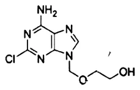
SNAr + 탈보호 · 암모니아가 C6를 공격한다. C6는 두 고리 질소가 음전하를 받아 주는 자리라 Meisenheimer 중간체가 안정하고, C2보다 훨씬 반응성이 크다. 같은 조건에서 벤조에이트도 아미노리시스로 풀려 OH가 드러난다.
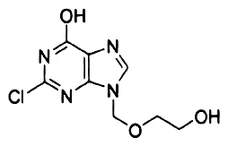
다이아조화 · 아세트산 속 NaNO₂가 HNO₂ → NO⁺를 내고, C6의 NH₂가 다이아조늄이 된다. N₂는 최고의 이탈기라 물이 바로 들어와 C6–OH(lactam 형)가 된다. 아민을 OH로 바꾸는 고전적 수단.
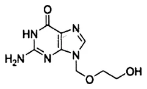
두 번째 SNAr · 남은 C2–Cl을 암모니아가 밀어낸다. C2는 C6보다 반응성이 낮아 125 °C까지 올려야 하고 수율도 12%로 떨어진다. 이 순서(C6 먼저, C2 나중)가 시험 포인트.
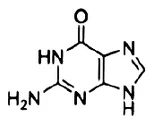
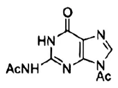
아세틸 보호 · guanine은 용해도가 거의 없고 반응 자리가 여럿이다. 2-NH₂와 N9를 아세틸로 덮으면 유기 용매에 녹고, 다음 단계에서 N9 아세틸이 좋은 이탈기가 되어 그 자리만 열린다.
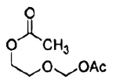
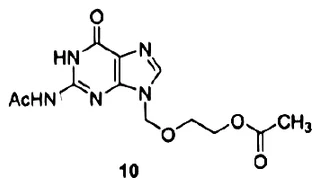
산 촉매 알킬화 · p-TsOH가 9의 아세톡시를 양성자화해 AcOH가 빠지고 산소로 안정화된 옥소늄 양이온 A가 생긴다. 한편 guanine의 N9 아세틸이 풀려 드러난 질소가 이 옥소늄을 공격한다. 2-NH₂는 아세틸로 묶여 있어 경쟁하지 못한다 — 여기서 위치선택성이 나온다.
탈보호 · 암모니아가 아세틸 전부를 아미노리시스로 떼어낸다. 법1보다 단계가 짧고 수율이 훨씬 좋다.
세 단계뿐이다. N9 알킬화 → 인산 에스터 탈알킬화 → 피발로일옥시메틸 이중 에스터화. 마지막 단계가 전부 전구약물(prodrug) 설계를 위한 것 — 음전하 인산은 세포막을 못 지나므로 가려 준다.
| 단계 | 핵심반응 | 무엇이 바뀌나 |
|---|---|---|
| 1 | N-알킬화 (SN2) | adenine N9 → N9–CH₂CH₂–O–CH₂–PO(OEt)₂ |
| 2 | 인산 에스터 탈알킬화 | P(O)(OEt)₂ → P(O)(OH)₂ |
| 3 | POM 이중 에스터화 | P–OH 2개 → P–O–CH₂–O–Piv 2개 |
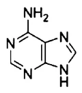
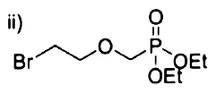
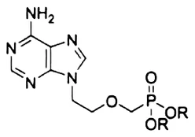
N-알킬화 · NaH가 adenine의 N9–H(pKa ≈ 9.8)를 떼고, 생긴 음이온이 알킬 브로마이드를 SN2로 공격한다. 6-NH₂는 고리와 공명해 친핵성이 약하므로 N9에서만 반응한다 — N9가 N7보다 입체장애도 작다.

인산 에스터 탈알킬화 · TMSBr의 규소가 P=O 산소에 붙어 실릴옥시포스포늄이 되고, Br⁻가 에틸을 SN2로 떼어간다(EtBr 이탈). 실릴 에스터는 물에 닿으면 바로 풀려 phosphonic acid가 된다. 산·염기 가수분해보다 훨씬 온화하다.
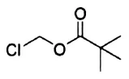
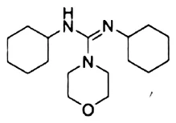
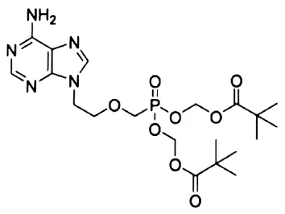
전구약물 전환 · 부피 큰 아마이딘 염기가 P–OH 둘을 탈양성자화하고, 생긴 포스포네이트 음이온이 chloromethyl pivalate를 SN2로 공격한다. 산소 옆 탄소라 Cl이 잘 빠진다. 결과물 pivaloyloxymethyl(POM) 이중 에스터는 전하가 없어 장에서 흡수되고, 체내 esterase가 풀면 HCHO와 pivalic acid가 떨어지며 활성형 adefovir가 나온다.
당의 산소 하나가 황으로 바뀐 1,3-oxathiolane이 cytosine에 붙은 구조. 붙이는 단계는 TMSI가 만든 옥소늄(oxocarbenium)에 cytosine이 들어가는 것이고, 고리 위/아래 모두 가능해 3a:3b = 1.3:1로 나온다. 출발물질 2를 만드는 쪽이 오히려 길고, 끝에 Pb(OAc)₄ 산화성 탈카복실화(KEY 28-1)로 아노머 자리에 OAc를 심는다.
| 단계 | 핵심반응 | 무엇이 바뀌나 |
|---|---|---|
| 본-1 | 옥소늄 매개 글리코실화 | OAc 이탈 → cytosine N1 부가 (3a:3b = 1.3:1) |
| 본-2 | 벤조에이트 제거 | OBz → OH |
| 출-1 | HNO₃ 산화 | chlorohydrin → α-하이드록시산 |
| 출-2 | 벤질 머캅탄 치환 | C–Cl → C–SBn |
| 출-3 | Brucine 광학분할 | rac → (+)-7 |
| 출-4 | 용해금속 탈벤질 | SBn → SH |
| 출-5 | 고리화 축합 | thiolactic acid + 알데하이드 → oxathiolane |
| 출-6 | Pb(OAc)₄ 산화성 탈카복실화 (KEY 28-1) | C–COOH → C–OAc |
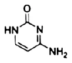
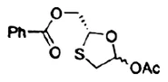
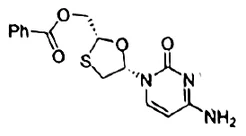
옥소늄 매개 축합 · Lewis 산 TMSI가 아노머 자리 OAc의 전자를 끌어 AcO–TMS가 빠지면, 산소가 안정화한 oxocarbenium이 생긴다. cytosine의 N1이 이 평면 양이온을 공격하는데 위·아래 양쪽 모두 접근 가능하므로 3a(β)와 3b(α)가 1.3:1로 나온다. 입체선택성이 낮은 것이 이 경로의 약점.
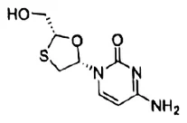
탈보호 · 3a만 분리한 뒤 염기성 이온교환수지가 벤조에이트를 가수분해해 1차 OH가 드러난다. 수지라 중화·추출 과정이 간단하다.
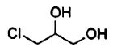
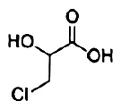
HNO₃ 산화 · 질산이 1차 OH를 알데하이드를 거쳐 COOH까지 올린다. 2차 OH는 그대로 남는다. 매 단계마다 HNO₂가 떨어져 나가는 니트레이트 에스터 경유 메커니즘.
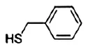
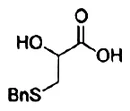
SN2 · 티올레이트(RS⁻)는 매우 좋은 친핵체라 C–Cl을 깔끔히 민다. 황을 미리 넣어 두는 단계.
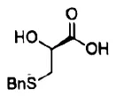
광학분할 · 알칼로이드 brucine(2,3-dimethoxystrychnine)과 부분입체 염을 만들어 용해도 차이로 가른 뒤 재결정한다. 여기서 최종 입체가 정해진다.
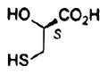
용해금속 탈벤질 · Na/NH₃(l)가 용매화 전자를 내 C–S 결합을 환원적으로 끊는다. 벤질 라디칼 음이온이 톨루엔으로 떨어지고 자유 티올이 드러난다. 수소화(H₂/Pd)로는 황 때문에 촉매가 피독돼 못 쓴다.
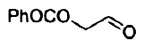
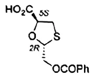
고리화 · SH와 COOH가 알데하이드에 차례로 붙어 1,3-oxathiolane 5원 고리를 닫는다. Lewis 산이 알데하이드를 활성화한다. 두 부분입체 이성질체가 1:2로 나오고 9a만 분리한다.
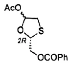
산화성 탈카복실화 (KEY 28-1) · COOH가 Pb(OAc)₄와 혼합 에스터를 만들고, homolytic cleavage로 CO₂와 Pb(OAc)₃가 떨어지며 탄소 라디칼이 생긴다. 이 라디칼이 다시 Pb에 잡혔다가 OAc를 받아 C–OAc가 된다. 그 결과 아노머 자리에 글리코실화용 이탈기가 심어진다.
교재에서 가장 긴 약물. 경로가 셋이고 KEY 28-2 Mitsunobu · 28-3 Diels–Alder · 28-4 HWE가 전부 여기서 나온다. 법1은 천연물 shikimic acid에서 출발해 aziridine을 두 번 만들었다 열어 세 치환기를 차례로 심는다. 법2(Corey)는 butadiene + acrylate의 비대칭 Diels–Alder로 고리를 처음부터 만든다. 법3(Ishikawa)은 Stork 엔아민 Michael → Michael/HWE로 one-pot 세 번에 끝낸다.
| 단계 | 핵심반응 | 무엇이 바뀌나 |
|---|---|---|
| 법1-1 | Fischer 에스터화 | COOH → COOEt |
| 법1-2 | Mitsunobu (KEY 28-2) | diol → 에폭사이드 (입체 반전) |
| 법1-3 | MOM 보호 → NaN₃ 개환 | 에폭사이드 → azido alcohol |
| 법1-4 | MsCl → Staudinger | N₃ + OMs → aziridine |
| 법1-5 | NaN₃ 개환 → 탈보호 | aziridine → amino azide |
| 법1-6 | TrCl/MsCl → aziridine | 두 번째 고리화 |
| 법1-7 | 3-pentanol 개환 → 아세틸화 | ether 사슬 도입 |
| 법1-8 | Staudinger + 가수분해 | N₃ → NH₂ |
| 법2-1 | Diels–Alder (KEY 28-3) | butadiene + acrylate → cyclohexene |
| 법2-2 | 아마이드화 → 아이오도락탐화 | Knapp 프로토콜 |
| 법2-3 | Boc → DBU 탈할로젠화 → NBS 라디칼 브로민화 | diene ester |
| 법2-4 | SnBr₄/NBA → KHMDS 고리화 | N-acetylaziridine |
| 법2-5 | 3-pentanol 개환 → H₃PO₄ | oseltamivir phosphate |
| 법3-1 | 알릴화 → OsO₄/NaIO₄ | 3-pentanol → 알데하이드 |
| 법3-2 | Stork 엔아민 Michael | 96% ee nitro 화합물 |
| 법3-3 | Michael + HWE (KEY 28-4) | 고리 형성, 5R:5S = 5:1 |
| 법3-4 | Curtius 전위 | COOH → NHAc |
| 법3-5 | Zn 환원 → NH₃/K₂CO₃ | NO₂ → NH₂, thioether 제거 |
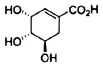
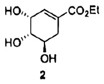
에스터화 · SOCl₂가 EtOH와 만나 HCl을 내고, 그 산이 촉매가 되어 Fischer 에스터화가 진행된다. 뒤에 나올 염기 조건에서 COOH가 방해하지 않도록 먼저 막는 것.
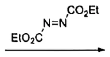
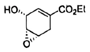
Mitsunobu (KEY 28-2) · PPh₃가 DEAD의 N=N에 부가해 베타인을 만들고, 이것이 알코올의 양성자를 떼면 알콕사이드가 인에 붙어 옥시포스포늄(R–O–PPh₃⁺)이 된다. OPPh₃는 최고급 이탈기다. 여기서는 옆자리 OH가 분자내 친핵체로 뒤에서 치고 들어와 입체 반전과 함께 에폭사이드를 닫는다. 추진력은 P=O 결합 형성.
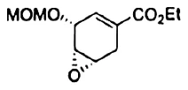
보호 · 남은 OH를 methoxymethyl(MOM)로 덮는다. MOM은 염기에 안정하고 묽은 산으로 쉽게 풀려 이 경로에 맞다.
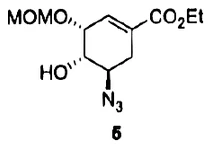
에폭사이드 개환 · N₃⁻가 입체장애가 작은 쪽 탄소를 뒤에서 공격해 anti 개환한다. NH₄Cl이 약산으로 산소를 잡아 주어 개환을 돕는다. 아자이드는 나중에 두 번이나 아민으로 바뀐다.
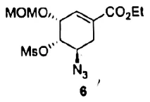
메실화 · 남은 2차 OH를 OMs로 바꿔 이탈기를 만든다. 다음 단계의 분자내 치환을 위한 준비.
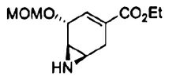
Staudinger 고리화 · PPh₃가 아자이드 말단 질소를 공격해 phosphazide → N₂ 이탈 → 아자-일라이드(iminophosphorane)가 된다. 이 질소 음이온이 옆의 OMs를 분자내 SN2로 밀어 aziridine을 닫는다. 환원과 고리화가 한 번에 일어나는 것이 묘미.
aziridine 개환 · 다시 N₃⁻가 고리를 뒤에서 열어 아미노-아자이드가 된다. 결국 인접한 두 탄소에 N 두 개가 trans로 심어졌다.
탈보호 · 묽은 산이 MOM을 풀어 OH가 드러난다.
두 번째 고리화 · 부피 큰 trityl로 아민을 막고, OH를 다시 OMs로 바꾼 뒤 아민 질소가 분자내 SN2로 공격해 aziridine을 닫는다. 다음 단계에서 이 고리를 pentanol로 열어 에테르를 심는다.
개환 + 보호 · BF₃가 aziridine 질소를 잡아 고리를 활성화하고, 3-pentanol이 입체장애가 작은 쪽 탄소를 뒤에서 공격해 에테르 사슬이 들어간다. 드러난 아민은 Ac₂O로 아세트아마이드로 막는다 — 최종 구조의 AcHN이 여기서 생긴다.
마무리 · Staudinger로 남은 아자이드를 1차 아민으로 바꾸고(물이 있으면 아자-일라이드가 가수분해된다), KOH로 에틸 에스터를 풀어 활성형 카복실산을 얻는다.
Diels–Alder (KEY 28-3) · 다이엔의 π전자 4개와 친다이엔체의 2개가 참여하는 [4+2] 고리화. π결합이 더 안정한 σ결합으로 바뀌므로 진행된다. 친다이엔체에 전자를 당기는 ester가 있어 반응성이 좋고 endo 선택성도 커진다. 여기서는 키랄 Lewis 산 촉매가 ester 산소를 잡아 한쪽 면만 열어 주므로 97% ee로 광학활성 cyclohexene이 한 번에 만들어진다.
아미노리시스 · 트라이플루오로에틸 에스터는 이탈기성이 커서 암모니아가 그대로 밀어낸다(CF₃CH₂O⁻가 안정). 정량적으로 1차 아마이드가 된다.
아이오도락탐화 · TMSOTf/Et₃N가 아마이드를 실릴 이미데이트로 바꿔 질소를 친핵성으로 만든다. I₂가 알켄에 붙어 iodonium을 만들면 질소가 분자내로 뒤에서 공격해 trans로 고리가 닫히고 요오드가 남는다. 이 요오드가 뒤에서 이탈기로 쓰인다.
Boc 보호 · 락탐 질소를 Boc으로 막아 다음 염기 조건에서 N–H가 방해하지 않게 한다.
탈할로젠화수소 · 비친핵성 강염기 DBU가 요오드 옆 H를 뽑아 E2로 알켄을 되살린다.
라디칼 브로민화 · AIBN이 쪼개져 라디칼을 내고, NBS가 낮은 농도의 Br₂를 공급한다. 알릴 위치 C–H가 뽑혀 알릴 라디칼이 되고(공명 안정화) 여기에 Br이 붙는다. 이중결합에 Br₂가 부가되지 않게 농도를 낮게 유지하는 것이 NBS의 역할.
개환·제거 · EtO⁻가 락탐 카보닐을 공격해 고리를 열어 에틸 에스터로 바꾸고, 동시에 알릴 브로마이드가 빠지며 1,3-diene이 만들어진다. Boc 아민이 남는다.
입체선택적 브로모아마이드화 · N-bromoacetamide가 Br⁺를 공급해 bromonium을 만들고, SnBr₄가 활성화한 상태에서 아세트아마이드 질소가 뒤에서 열어 trans로 Br과 NHAc가 들어간다.
aziridine 고리화 · KHMDS가 Boc-아민의 N–H를 떼고, 그 질소가 옆 C–Br을 분자내 SN2로 밀어 aziridine을 닫는다.
개환 · Cu(II)가 aziridine을 활성화하고 3-pentanol이 열어 에테르 사슬이 들어간다. 법1의 BF₃ 개환과 같은 논리.
탈보호·조염 · 인산이 Boc을 풀고 동시에 드러난 1차 아민과 염을 이룬다. 한 단계로 최종 제형까지 간다.
Williamson · 알콕사이드가 알릴 브로마이드를 SN2로 공격한다. 최종 구조의 3-pentyloxy 사슬을 맨 처음에 깔아 둔다.
산화성 분해 · OsO₄가 알켄에 syn 부가해 osmate ester → 가수분해로 1,2-diol을 만들고, NaIO₄가 diol의 C–C를 끊어 알데하이드를 낸다. NaIO₄는 Os(VI)를 Os(VIII)로 되돌려 OsO₄를 촉매량만 쓰게 한다.
Stork 엔아민 Michael · 프롤린 유래 키랄 2차 아민이 알데하이드와 엔아민을 만들고, 이 엔아민의 β-탄소가 nitroalkene에 1,4-부가한다. 촉매의 부피 큰 다이페닐실릴기가 한쪽 면을 막아 96% ee가 나온다.
Michael + HWE (KEY 28-4) · 니트로네이트가 vinyl phosphonate에 Michael 부가하고, 이어서 생긴 포스포네이트 카바니온이 같은 분자의 알데하이드를 공격한다. 네 원자 고리 oxaphosphetane을 거쳐 Ph₃P=O 대신 (EtO)₂PO₂⁻가 빠지며 C=C가 생기고 6원 고리가 닫힌다. 인으로 안정화된 카바니온이라 Wittig보다 (E)-알켄 선택성이 좋다.
이성화 · 티올이 Michael 부가-탈리를 반복하며 입체가 더 안정한 5S 쪽으로 몰아간다. 동시에 thioether(Stol)가 붙는다. 28부터 여기까지가 one-pot, 수율 70%.
탈보호 · TFA가 t-Bu 에스터를 풀어 COOH를 드러낸다. 다음 Curtius를 걸려면 자유 산이 필요하다.
아실 아자이드 · 옥살릴 클로라이드로 산 염화물을 만들고 NaN₃를 넣어 아실 아자이드로 바꾼다. Curtius의 출발점.
Curtius 전위 · 가열하면 N₂가 빠지면서 알킬기가 질소로 1,2-이동해 isocyanate가 된다. 이동하는 탄소는 입체를 유지한다. 여기에 AcOH가 붙어 혼합 무수물을 거쳐 아세트아마이드가 된다. 탄소 1개가 줄어드는 반응.
금속–산 환원 · Zn/TMSCl이 지방족 NO₂를 NH₂까지 환원한다.
제거 · 염기가 ester의 α-H를 떼고 생긴 엔올레이트에서 thiolate가 이탈해(E1cb) α,β-불포화 에스터가 만들어진다. 고리의 이중결합이 복원되며 oseltamivir가 완성된다.
세 단계로 끝나는 짧은 합성. nitrogen mustard(bis(2-chloroethyl)amine)를 만들고, POCl₃로 인에 얹은 뒤 3-aminopropanol로 6원 oxazaphosphinane 고리를 닫는다. 고리 자체는 약효가 없고, 체내 phosphoramidase가 풀어야 활성형이 된다 — 전구약물.
| 단계 | 핵심반응 | 무엇이 바뀌나 |
|---|---|---|
| 1 | 에폭사이드 개환 ×2 → 염소화 | ethylene oxide 2당량 + NH₃ → bis(2-chloroethyl)amine |
| 2 | 인 아마이드화 | amine + POCl₃ → P(O)Cl₂ |
| 3 | 이중 치환 고리화 | P–Cl 2개 + HO/H₂N 사슬 → 6원 고리 |
개환 → 염소화 · 암모니아가 에폭사이드를 SN2로 두 번 열어 bis(2-hydroxyethyl)amine이 된다. 이어 SOCl₂가 두 1차 OH를 각각 클로로설파이트로 바꾸고 Cl⁻가 밀어내 nitrogen mustard가 완성된다. 아민의 당량을 맞춰 3차 아민까지 가지 않게 하는 것이 요령.
P–N 결합 형성 · 아민 질소가 POCl₃의 인을 공격하고 Cl⁻가 빠진다. 인에 Cl 두 개가 남아 다음 고리화의 이탈기가 된다.
고리 닫기 · 3-aminopropanol의 OH와 NH₂가 인의 Cl 두 개를 차례로 밀어내 O–P–N을 포함한 6원 고리(1,3,2-oxazaphosphinane)가 닫힌다. Et₃N은 떨어지는 HCl을 잡는 역할. 낮은 온도를 유지해 mustard 쪽이 분자내로 고리화(aziridinium)하는 것을 막는다.
세 조각을 one-pot으로 한 번에 묶는다. 핵심은 pyrazine 고리가 어느 아민에서 닫히느냐. 교재가 길게 설명하는 위치선택성 — 4·6번 아민이 먼저 알데하이드와 이민을 만들고, 그 다음 5번 아민이 2차 알킬브로마이드와 SN2를 해야 원하는 고리가 나온다.
| 단계 | 핵심반응 | 무엇이 바뀌나 |
|---|---|---|
| 1 | 이민 형성 | pyrimidine 4(또는 6)-NH₂ + CHO → C=N |
| 2 | SN2 고리화 | 5-NH₂ + 2차 C–Br → pyrazine 고리 |
| 3 | 방향족화 | −H₂ → pteridine |
| 4 | 벤질 치환 | CH₂Br + 2차 아민 → C–N (one-pot) |
pyrazine 고리 형성 · 약산성(pH 3–4)에서 가장 염기성이 큰 고리 질소가 먼저 양성자화된다. 그러면 공명으로 4·6번 아민의 전자밀도가 높아져 이들이 먼저 알데하이드를 공격해 이민을 만든다. 이어 인접한 5번 아민이 2차 알킬브로마이드를 SN2로 밀어 6원 고리를 닫고, H₂가 빠지며 방향족화돼 pteridine이 된다.
전자 주개가 ortho·para에 둘 붙은 5번 아민이 가장 친핵적일 것 같지만, 황산염 + 약산 조건이 순서를 뒤집는 것이 시험 포인트.
벤질 치환 · 남은 CH₂Br을 p-methylaminobenzoylglutamate의 N-메틸 아민이 SN2로 공격한다. 벤질 위치라 반응이 빠르다. 같은 플라스크에서 이어지므로 one-pot. I₂/KI는 Br을 I로 바꿔(Finkelstein) 치환을 가속한다.
uracil 고리를 만드는 두 가지 길. 법1은 F를 먼저 달아 두고 Claisen으로 1,3-다이카보닐을 만든 뒤 isothiourea로 고리를 닫는다 — 마지막에 MeS를 HO로 바꿔 uracil 완성. 법2는 uracil 고리를 먼저 만들고 나중에 CF₃OF로 F를 넣는다. 어느 쪽이든 1,3-다이카보닐 + N–C–N 조각의 조합이다.
| 단계 | 핵심반응 | 무엇이 바뀌나 |
|---|---|---|
| 법1-1 | 에스터화 | RCOONa → RCOOEt |
| 법1-2 | Claisen 축합 | ester + HCOOEt → β-케토(포밀) 에스터 |
| 법1-3 | 이중 축합 고리화 | + S-methylisothiourea → 2-methylthio-5-FU |
| 법1-4 | 산 가수분해 | MeS → HO (uracil) |
| 법2-1 | 3성분 축합 | urea + malonate + orthoformate → 9 |
| 법2-2 | 분자내 아마이드화 | 고리 닫기 → 10 |
| 법2-3 | CF₃OF 플루오르화 | C5에 F 도입 |
| 법2-4 | 가수분해·탈탄산·탈메탄올 | → 5-FU |
에스터화 · 카복실레이트 음이온이 다이에틸 설페이트의 에틸을 SN2로 가져온다. 설페이트 음이온이 좋은 이탈기라 산 촉매 없이도 진행된다.
Claisen 축합 · 에톡사이드가 fluoroacetate의 α-H를 떼고(F가 산성도를 높인다), 엔올레이트가 ethyl formate의 카보닐을 공격한다. EtO⁻가 빠지며 포밀기가 붙어 1,3-다이카보닐(알데하이드 + 에스터)이 된다. 생성물이 더 산성이라 염기가 잡아 주는 것이 평형의 추진력.
고리 닫기 · isothiourea의 두 질소가 각각 알데하이드(이민 형성)와 에스터(아마이드 형성)를 공격해 6원 pyrimidine 고리를 만든다. N–C(SMe)=N 조각이 고리의 2번 탄소가 된다.
치환 · 물이 C2를 공격하고 MeSH가 빠진다. 티오에테르는 양성자화되면 좋은 이탈기가 된다. 토토머화로 lactam(uracil) 형이 되며 완성.
3성분 반응 · 고온에서 orthoformate의 OEt 하나가 빠져 친전자성 옥소늄이 생긴다. 엔올화된 malonate의 α-탄소가 이를 공격해 C–C 결합이 생기고, 다시 엔올화-제거로 OEt가 빠져 α,β-불포화 카보닐이 된다. 여기에 urea가 1,4-부가하고 남은 OEt가 또 빠지면 9가 완성된다.
고리화 · urea의 남은 NH₂가 분자내에서 에스터 하나를 공격해 아마이드를 만들며 uracil 고리가 닫힌다. COOMe 하나가 C5에 남는다.
친전자성 F 도입 · CF₃OF가 F⁺ 공급원이다. 전자가 풍부한 C5=C6 이중결합이 F⁺를 공격하고, 생긴 C6 양이온을 메탄올이 잡아 OMe가 붙는다. 그래서 고리가 일시적으로 dihydro 형이 된다.
마무리 · 산 조건에서 ① 에스터가 가수분해돼 COOH가 되고 ② 바로 탈탄산되며 ③ C6의 OMe가 MeOH로 빠지면서 C5=C6이 복원된다. 세 반응이 한 번에 일어나 5-FU가 나온다.
2번 탄소에 F 두 개가 박힌 cytidine. F₂는 Reformatsky (KEY 12-3)로 들여온다 — 아연 엔올레이트가 알데하이드에 붙으면서 CF₂ 조각이 그대로 사슬에 실린다. 이후는 고리 닫기 → 보호 → DIBAL 환원 → 메실화 → cytosine 글리코실화.
| 단계 | 핵심반응 | 무엇이 바뀌나 |
|---|---|---|
| 1 | Reformatsky (KEY 12-3) | BrCF₂CO₂Et + Zn + CHO → β-하이드록시 에스터 |
| 2 | 아세탈 제거 → 락톤화 | → 2-deoxy-2,2-difluororibonolactone |
| 3 | TBS 보호 | OH 2개 → OTBS |
| 4 | DIBAL 환원 | 락톤 → 락톨(hemiacetal) |
| 5 | 메실화 | 아노머 OH → OMs |
| 6 | 글리코실화 + 탈보호 | + 실릴화 cytosine → gemcitabine |
Reformatsky (KEY 12-3) · Zn이 α-할로 에스터의 C–Br에 산화적 삽입해 유기아연 엔올레이트를 만든다. Grignard와 달리 온화해서 에스터를 스스로 공격하지 않는다. 이 엔올레이트가 알데하이드에 부가해 β-하이드록시 에스터가 되고, CF₂가 이때 들어온다.
고리 닫기 · 산성 수지가 아세톤 아세탈 보호기를 풀어 diol을 드러내고, 생긴 OH가 분자내에서 에스터를 공격해 5원 락톤을 만든다. 당 골격이 여기서 완성된다.
보호 · 두 OH를 t-butyldimethylsilyl로 막는다. TBS는 부피가 커서 뒤에 오는 글리코실화의 입체에도 영향을 준다.
DIBAL 환원 · 락톤을 알코올까지 가지 않고 락톨(hemiacetal)에서 멈춘다. −84 °C에서 사면체 알루미늄 알콕사이드 중간체가 유지되기 때문. 아노머 자리에 OH가 생긴다.
이탈기 설치 · 아노머 OH를 OMs로 바꾼다. 다음 단계에서 Lewis 산이 이 자리를 열어 oxocarbenium을 만든다.
글리코실화 · TMSOTf가 OMs를 끌어내 oxocarbenium을 만들고, 실릴화된 cytosine의 N1이 공격한다. 실릴화는 cytosine을 유기 용매에 녹이고 질소의 친핵성을 높이기 위한 것. 이어 HBr로 TBS를, NH₄OH로 N-아세틸을 떼면 gemcitabine이 나온다. α/β 혼합물이라 역상 HPLC로 가르고, 그래서 최종 수율이 4%에 그친다.
Grignard 부가 → 탈수 두 걸음이면 골격이 끝난다. 문제는 생긴 삼치환 알켄이 cis/trans 혼합이라는 것 — 교재는 분리를 petroleum ether 재결정으로 처리한다. 법2는 아민 사슬을 마지막에 붙이려고 OMe로 가려 두었다가 pyridinium chloride로 탈메틸화한다.
| 단계 | 핵심반응 | 무엇이 바뀌나 |
|---|---|---|
| 법1-1 | Grignard 부가 | 케톤 → 3차 알코올 |
| 법1-2 | 산 탈수 (E1) | 3차 알코올 → 삼치환 알켄 (cis + trans) |
| 법1-3 | 재결정 | trans만 결정으로 회수 |
| 법2-1 | Grignard 부가 | 케톤 + 4-MeO-페닐MgBr → 3차 알코올 |
| 법2-2 | 탈수 + 탈메틸화 | → 페놀 (cis/trans) |
| 법2-3 | Williamson SN2 | 페놀 + Me₂N–CH₂CH₂Cl → 아미노에톡시 |
Grignard 부가 · 페닐 음이온 등가체가 케톤 카보닐을 공격해 알콕사이드가 되고, NH₄Cl 워크업으로 양성자화돼 3차 알코올이 된다. 이 탄소가 나중에 알켄의 한쪽 끝이 된다. 사슬 끝 3차 아민은 Grignard에 영향을 주지 않는다(염기성이지만 산성 H가 없다).
E1 탈수 · OH가 양성자화돼 물로 빠지면 벤질릭 3차 양이온이 생긴다(두 페닐로 강하게 안정화). 인접 CH₂에서 H가 떨어져 알켄이 되는데, 사치환에 가까운 삼치환 알켄이라 cis·trans 모두 나온다.
재결정 분리 · trans 이성질체가 먼저 결정으로 석출되고 cis는 모액에 남는다. trans(Z)형만 항에스트로젠 활성이 있어 분리가 필수. 기하 이성질체를 결정성 차이로 가르는 고전적 방법.
Grignard 부가 · 법1과 같지만, 아민 사슬 대신 OMe로 가려 둔 페놀을 들여온다. 아민을 미리 달면 뒤의 강산 조건에서 염이 되어 다루기 번거롭기 때문.
탈수 + 탈메틸화 · 먼저 E1으로 알켄을 만들고, 이어 pyridinium chloride를 녹여 가열한다. 피리디늄의 산성 N–H가 아릴 에테르 산소를 양성자화하고, Cl⁻가 메틸을 SN2로 떼어 MeCl이 빠진다 — 페놀이 드러난다. BBr₃보다 거친 고전적 조건.
Williamson · 소듐 메톡사이드가 페놀을 페녹사이드로 만들고, 이것이 다이메틸아미노에틸 클로라이드를 SN2로 공격해 아미노에톡시 사슬이 붙는다.
분리 · 법1과 같은 마무리. trans만 결정으로 얻는다.
치환기가 세 개 붙은 벤젠을 만드는 순서 문제. 브로모메틸 두 개 → 니트릴 → 메틸 네 개 → 다시 벤질 브로민화 → 트라이아졸. 같은 CH₂Br 자리를 두 번 쓰는데, 처음엔 상전이촉매 SN2, 두 번째는 Wohl–Ziegler 라디칼 브로민화로 만든다는 점이 핵심.
| 단계 | 핵심반응 | 무엇이 바뀌나 |
|---|---|---|
| 1 | 상전이 SN2 | CH₂Br ×2 → CH₂CN ×2 |
| 2 | α-알킬화 (SN2) ×4 | CH₂CN → C(CH₃)₂CN |
| 3 | Wohl–Ziegler 라디칼 브로민화 | Ar–CH₃ → Ar–CH₂Br |
| 4 | SN2 | CH₂Br + 트라이아졸 음이온 → N-CH₂ |
상전이 SN2 · CN⁻는 물층에, 기질은 유기층에 있어 그냥은 안 만난다. 4차 암모늄염 TBAB가 CN⁻를 짝이온으로 업고 유기층으로 넘겨 준다. 넘어온 CN⁻는 수화 껍질이 벗겨져 맨 음이온(naked anion)이라 친핵성이 훨씬 크다. 벤질 브로마이드 두 개가 모두 치환된다.
α-알킬화 · 니트릴이 α-H의 산성도를 높여(pKa ≈ 25) NaH가 떼어낸다. 생긴 카바니온이 MeI를 SN2로 공격한다. 이를 자리마다 두 번씩, 총 네 번 반복해 C(CH₃)₂CN 두 개가 완성된다. 니트릴이 음전하를 직선형으로 안정화하므로 가능한 반응.
Wohl–Ziegler · 벤조일 퍼옥사이드가 쪼개져 라디칼을 내고, NBS가 미량의 Br₂를 꾸준히 공급한다. Br•이 벤질 위치 C–H를 뽑으면 고리 공명으로 안정화된 벤질 라디칼이 생기고 Br₂에서 Br을 받는다. 남은 메틸 하나만 선택적으로 브로민화된다 — 3차 알킬니트릴 쪽에는 뽑을 H가 없다.
N-알킬화 · 트라이아졸 음이온의 N1이 벤질 브로마이드를 SN2로 공격한다. 1,2,4-트라이아졸은 N1과 N4 두 곳이 가능하지만 입체장애가 작은 N1에서 반응한다. 이 트라이아졸 질소가 aromatase의 heme 철에 배위해 효소를 막는 것이 약리 기전.
조각 두 개를 따로 만들어 pyrimidine 고리에서 합친다. 왼쪽은 아세틸피리딘 + DMFDMA로 만든 엔아미논(1,3-다이카보닐 등가체), 오른쪽은 아닐린 + cyanamide로 만든 구아니딘. 둘을 붙이면 N–C–N이 고리의 2번이 되고 pyrimidine이 닫힌다. 그다음 NO₂ 환원 → 아마이드화로 끝.
| 단계 | 핵심반응 | 무엇이 바뀌나 |
|---|---|---|
| 1 | 엔아미논 형성 | 3-acetylpyridine + DMFDMA → C=C–NMe₂ |
| 2 | 구아니딘 형성 | 아닐린 + H₂N–CN → 구아니딘 |
| 3 | 1,4-부가 → 축합 → 방향족화 | pyrimidine 고리 완성 |
| 4 | 접촉 수소화 | Ar–NO₂ → Ar–NH₂ |
| 5 | 아마이드화 | 아민 + 산 염화물 → imatinib |
엔아미논 형성 · DMFDMA의 질소 비공유전자쌍이 옆 탄소를 밀어 MeO⁻가 빠지고 이미늄이 생긴다. 떨어진 MeO⁻가 아세틸피리딘의 α-H를 떼어 엔올레이트를 만들고, 이 엔올레이트가 이미늄과 C–C 결합을 맺는다. 이어 β-제거로 두 번째 OMe가 빠지면 α,β-불포화 케톤(엔아미논)이 된다. 1,3-다이카보닐 대신 쓰는 등가체.
구아니딘 · 아닐린 질소가 cyanamide의 니트릴 탄소에 부가해 C=N을 만들고 토토머화하면 –NH–C(=NH)–NH₂가 된다. 이 N–C–N 조각이 pyrimidine의 2번 탄소와 1·3번 질소가 된다.
pyrimidine 고리화 · 구아니딘의 한쪽 NH₂가 엔아미논에 1,4-부가하면 다이메틸아민이 이탈하며 케톤 중간체 A가 생긴다. 구아니딘의 다른 질소가 이 케톤을 공격해 축합(−H₂O)으로 이민을 만들고, 토토머화로 방향족화되면 pyrimidine이 완성된다.
NO₂ 환원 · 상압 수소에서 Pd-C가 방향족 나이트로를 아민까지 환원한다. 피리딘·피리미딘 고리는 건드리지 않는다.
아마이드 결합 · 아닐린 질소가 산 염화물을 공격하고 Cl⁻가 빠진다. 피리딘은 HCl을 잡는 동시에 아실피리디늄을 거쳐 반응을 돕는다. 실제 제품은 여기에 methanesulfonic acid를 더해 메실산염으로 만든다 — 용해도·결정성 개선.
구조식은 골격 구조입니다. 선 끝은 메틸기, 꺾인 지점은 탄소입니다. 카드 윗선 색: 갈색 = 출발물질, 회색 = 중간체, 보라 = 시약·반응 상대, 청록 = 최종 생성물. 노란 배경은 그 단계에서 가장 자주 묻는 포인트입니다. 쐐기(굵은 삼각형) = 앞으로, 점선 쐐기 = 뒤로.
© 면역반 민서정리 @water_.color_